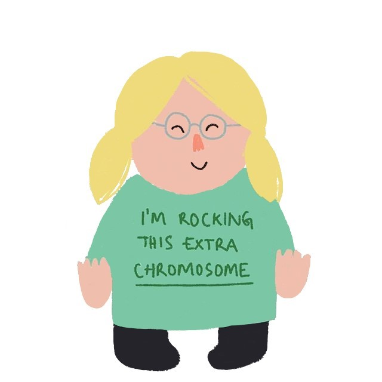

Also known as Trisomy 21, Down Syndrome is a genetic disorder caused by the presence of all or part of a third copy of chromosome 21. It is usually associated with physical growth delays, mild to moderate intellectual disability, and characteristic facial features. The average IQ of a young adult with Down syndrome is 50, but this can vary widely.
While there is no cure for Down Syndrome, there are therapies, treatments and educational support available to improve the quality of life of those affected. Early intervention produces the best results. Young children are constantly in the process of developing speech and motor habits; by acting early, parents can foster the appropriate physical and behavior skills so that they become a habit. Even before a child with Down Syndrome reaches school age, various therapies can help.
Our desire to unite technology and healthcare made us come up with this innovative idea. We know that Down Syndrome people can learn how to socialise through therapy and they also have a strong connection with dogss. On the other hand, most people nowadays are always in a rush and usually do not have so much time to spend with their pet. So we thought why not make this lack of time a benefit for others? And this is how HelpUp was born, a social network where the "always in a hurry" person can give their dog for a couple of hours to the Down Syndrome person and their caretaker and by their nature, dogs provide affection, comfort and can help with socializing.
